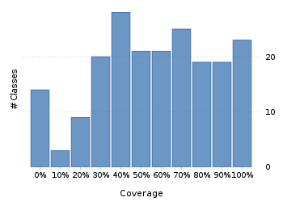
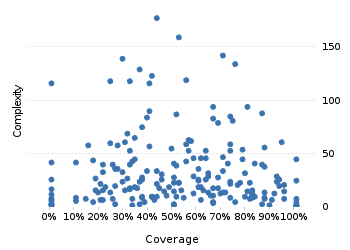

Project overview
Code coverage 228 classes, 11,450 / 21,538 elements
0.5316185453.2%
Test results 296 / 397 tests 1.79 secs
0.7455919474.6%
Code metrics
4,882
12,842
3,814
228
157
7
68,718
27,801
6,977
0.54
3.37
16.73
32.57
1.83
Class Coverage Distribution

Class Complexity

Coverage tree map
Generating Coverage Tree Map. Please wait...

Top 20 project risks
DateTimeZoneBuilder
DateTimeZoneBuilder.OfYear
PeriodFormatterBuilder.FieldFormatter
ZoneInfoCompiler
DateTimeZoneBuilder.RuleSet
DateTimeZoneBuilder.PrecalculatedZone
ZoneInfoCompiler.Rule
ZoneInfoCompiler.DateTimeOfYear
PeriodFormatterBuilder.Separator
PeriodFormatterBuilder.Composite
FieldUtils
PeriodFormatterBuilder.SimpleAffix
PeriodType
ZoneInfoCompiler.Zone
DateTimeFormatterBuilder.NumberFormatter
DateTimeParserBucket.SavedState
DateTimeFormatterBuilder.MatchingParser
ImpreciseDateTimeField
DateTimeFieldType.StandardDateTimeFieldType
AbstractPartial
Most complex packages
| 1. | 0.4405199344.1% |
org.joda.time 2458 |
| 2. | 0.4840616348.4% |
org.joda.time.format 1496 |
| 3. | 0.628078862.8% |
org.joda.time.chrono 1239 |
| 4. | 0.519596952% |
org.joda.time.field 667 |
| 5. | 0.798671479.9% |
org.joda.time.tz 535 |
Most complex classes
| 1. | 0.4357005743.6% |
LocalDateTime 179 |
| 2. | 0.5215605552.2% |
LocalDate 161 |
| 3. | 0.7022900670.2% |
DateTimeZone 144 |
| 4. | 0.293650829.4% |
DateTime 141 |
| 5. | 0.755760475.6% |
PeriodFormatterBuilder.FieldFormatter 136 |